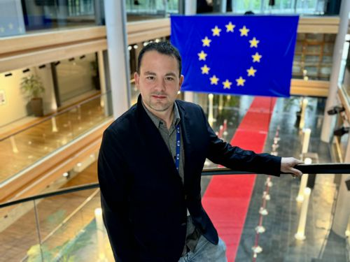

Political Consultant; Expert on EU Affairs
Luca Rovinalti is a political consultant specializing in European institutional processes and strategic political communication. He brings a cross-border perspective and a results-oriented approach to public affairs.
He holds diplomas from the Diplomatic Academy in Prague and the European Academy of Diplomacy in Warsaw. Rovinalti is a member of the Forbes Business Council.
In 2023, he was featured in Fortune Italia’s 40 Under 40 for his contributions to media strategy and EU public affairs.
He is fluent in Italian, Spanish, and English.